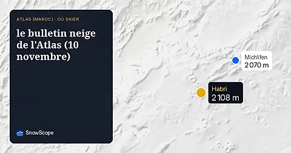

Cartes neige Atlas jusqu'au 26 novembre : peu de neige fraîche dans les deux prochaines semaines
Les perspectives sur deux semaines pour l'Atlas (Maroc) du 13 au 26 novembre montrent un schéma sec. Dans toute la région, les montagnes verront presque pas de neige nouvelle sur ces 14 jours. Ni Habri ni Oukaïmeden ni aucun terrain au-dessus de 1 000 m ne devrait accumuler de neige mesurable.
Consultez les prévisions neige en temps réel pour Habri sur l'application SnowScopeHauteurs de neige, alertes poudreuse et carte 3D, gratuitement.Ce que chaque station peut attendre
Habri restera sec pendant la quinzaine, sans neige nouvelle prévue sur ses pentes supérieures. Oukaïmeden, la station la plus haute de la région, fait face au même tableau : 0 cm sur les 14 jours. Aucune des deux stations ne verra un seul jour avec 5 cm ou plus de neige nouvelle.
Cette période sèche reflète des systèmes météorologiques faibles dans la région pour mi-fin novembre. Les deux prévisions globales (ECMWF et GFS) s'accordent étroitement sur cette perspective, laissant peu d'incertitude.
| Station | Hauteur de neige | Neige fraîche, 72 h | Attendu, jours suivants | Sommet |
|---|---|---|---|---|
| Habri | 0 cm | 0 cm | 0 cm | 2 108 m |
| Oukaïmeden | 0 cm | 0 cm | 0 cm | 3 258 m |

Découpage par semaines
Si la première semaine (13 au 19 novembre) voit de la neige nouvelle sur les montagnes, elle représentera environ 11 % du total sur deux semaines. La deuxième semaine (20 au 26 novembre) contiendrait le reste, mais ce reste est négligeable. En pratique, les deux semaines restent très calmes.
Ce découpage compte pour la planification : la deuxième semaine n'offre aucun espoir d'amélioration non plus, donc les décisions prises tôt ne seront pas renversées par la neige fin novembre.

Neige par altitude : le facteur hauteur
L'altitude décide généralement si une tempête apporte de la neige ou de la pluie, et si la neige persiste. Dans l'Atlas sur ces 14 jours, le tableau est uniforme : aucune couche des montagnes—de 1 000 m à 4 500 m—n'est prévue de recevoir de la neige nouvelle. Même les plus hauts sommets, où les températures restent froides et la neige devrait tenir, ne montrent rien.
Cela exclut la possibilité que les pentes mi-montagne (autour de 2 000–3 000 m, terrain de ski typique) connaissent des périodes sèches tandis que les pics restent ensevelis. Toutes les altitudes font face à la même perspective sèche.

Aucun jour de neige remarquable
Sur les 14 jours du 13 au 26 novembre, aucun jour unique n'apporte 5 cm ou plus sur aucun des terrains que nous suivons.
Cette absence de jours seuil signifie pas d'accumulation rapide de base, pas de rafraîchissement rapide de la surface de neige, et pas de jours où les rochers deviennent ensevelis sur les pentes supérieures peu profondes. Les skieurs planifiant un voyage feront face à la neige restante de plus tôt dans la saison.
Ce que les cartes montrent
Trois cartes accompagnent cette prévision : une pour les 14 jours complets, une pour la première semaine seule, et une pour la deuxième semaine. L'échelle de couleur va du vert clair (peu ou pas de neige nouvelle) à des verts plus foncés, bleus et violets (chutes plus importantes). Ces cartes lisent la valeur médiane des deux prévisions ; l'écart entre elles montre la certitude de la prévision.
Quand vous voyez des écarts importants dans les prévisions ultérieures, les prévisions divergent davantage, et cette incertitude élargit votre marge de planification. Des cartes fraîches arrivent chaque matin.
Ce que neige sèche signifie au sol
Quand la neige nouvelle ne tombe pas, le manteau neigeux existant reste exposé au soleil et au vent. En novembre aux altitudes hautes de l'Atlas, le soleil est plus faible mais toujours actif sur les pentes orientées sud. Le terrain à l'ombre face au nord à 3 000 m et au-dessus conservera la neige plus ancienne plus longtemps, tandis que les pentes ensoleillées s'amincront.
C'est pourquoi nous disons toujours : vérifiez d'abord l'ombre. La neige dure où le soleil ne peut pas l'atteindre. Si vous planifiez un voyage, préférez les faces nord et le terrain haut dans la première partie de la journée, avant que le soleil de l'après-midi se renforce.
Conseils aux skieurs
- Utilisez la première semaine (13–19 novembre) comme votre ancre de planification. La deuxième semaine n'offre pas d'amélioration de neige, donc ne comptez pas sur elle ; décidez tôt.
- Le niveau à 0 °C (l'altitude où la pluie devient neige) peut décaler de plusieurs centaines de mètres entre les prévisions, changeant quel terrain reçoit de la neige. Vérifiez la carte à nouveau la veille de votre départ.
- Avant tout plan hors-piste ou en ski de randonnée, lisez le bulletin officiel d'avalanche pour la région. Les périodes sèches peuvent cacher l'instabilité dans les couches de neige plus anciennes.
- Ces cartes montrent la profondeur de neige en terrain, pas le statut de la station. Confirmez que les remontées fonctionnent et que la station est ouverte avant de réserver un voyage.
À propos de ces chiffres
Les hauteurs de neige des stations sont la neige la plus épaisse sur le haut du domaine à la date indiquée ; ce sont des estimations pour une zone, pas une mesure en un point. Les prévisions peuvent changer. Consultez toujours le bulletin d'avalanche officiel avant le hors-piste.
Citer ce bulletin
Pour la recherche, l'enseignement ou la presse : chiffres et graphiques réutilisables librement sous CC BY 4.0 avec cette citation.
SnowScope (2026), Cartes neige Atlas jusqu'au 26 novembre : peu de neige fraîche dans les deux prochaines semaines, https://snowscope.app/blog/fr/2026/11/atlas-morocco-2-week-snow-forecast-maps-12-november-2026.html, consulté le 2026-11-12
SnowScope (Atlas Labs). (2026, November 12). Cartes neige Atlas jusqu'au 26 novembre : peu de neige fraîche dans les deux prochaines semaines. SnowScope snow reports. https://snowscope.app/blog/fr/2026/11/atlas-morocco-2-week-snow-forecast-maps-12-november-2026.html
BibTeX
@misc{snowscope2026atlasmorocco2weeksnowfor,
author = {{SnowScope (Atlas Labs)}},
title = {Cartes neige Atlas jusqu'au 26 novembre : peu de neige fraîche dans les deux prochaines semaines},
year = {2026},
month = nov,
howpublished = {\url{https://snowscope.app/blog/fr/2026/11/atlas-morocco-2-week-snow-forecast-maps-12-november-2026.html}},
note = {Published 2026-11-12 18:20 UTC; accessed 2026-11-12}
}· CC BY 4.0 · Méthodes, données et outils →
Habri : neige et température selon l'altitude, cet hiver vs l'hiver dernier (outils) →
Suivre Habri
Gratuit : un message quand la neige arrive, et la météo chaque matin.
Autres bulletins neige

Seulement 8 cm de neige recouvrent les plus hauts sommets de l'Atlas aujourd'hui. Aucune neige dans les stations de ski. La couverture diminue rapidement en mi-novembre.

À l'altitude d'Oukaïmeden, notre série de 46 hivers montre 12 % de jours de neige en moins ; plus bas, le signal se perd. Ce que l'on sait.

La neige se retire vers les plus hauts sommets de l'Atlas. Les trois stations de ski n'ont pas de neige aujourd'hui ; 40 km² de crêtes restent blanches. D'autres fonte en perspective.